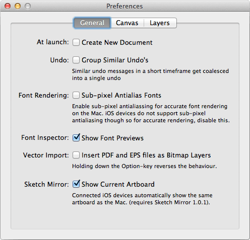
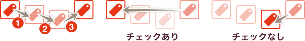
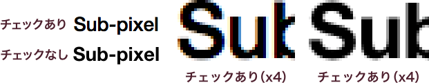

Sketch.app Advent Calender 2013 3日目の記事です。
今回から3回に分けて、Sketch.appの環境設定についてお届けします。その初回は「General」です。
Sketchの基本。というSketch（Sketch 3）の基本操作にフォーカスした電子書籍をリリースしました。詳しくはこちらの「Sketchの基本。」のページをご覧ください。
Generalタブについて

「General」タブは、残り2つのタブから（多分）溢れた項目の設定ができます。
今更、環境設定の出し方が分からない方もいらっしゃらないと思いますが、［Sketch］メニューの中にある［Preference］・ショートカットはCommand＋,です。
あと、バージョンを明記してませんでしたが、記事は2.4.1をベースに書いています。
At launch
チェックを入れておくと、Sketch.appを立ち上げと同時に新規ドキュメントを自動的に作成します。
Undo
チェックを入れると、同様の動作はグループ化され、グループごとのUndoになります。

例えば、移動を3回繰り返した場合、チェックを入れている場合は3回前の座標、チェックを入れていない場合は、1回前の座標に戻ります。
Font Rendering
チェックを入れるとサブピクセルによるフォントレンダリングになり、スクリーン上と同じ見た目になります。下の注意書きは、「iOSデバイスはサプピクセルレンダリングに対応していないので、チェックを外してね！」ということで、iOS向けの制作物であればオフにしておきましょう。

細かい説明は省きますが、サブピクセルレンダリングをオンにすると、特性上 設定した色以外でスムージングされます。文字を画像化する場合は、オフの方が幸せかもしれません。
設定の反映は、Sketch.appを再起動する必要があります。
Font Inspector
チェックを入れると、フォントリストでフォントのプレビューが表示されます。
Vector Import
チェックを入れると、PDFおよびEPSファイルをビットマップレイヤーとして挿入します。オプションを押しておくと、設定している逆の動作をします。
あまり使う機能ではないと思いますが、正直いうと、インポートをどこからするのかが不明で、設定が有効なのかどうかわかりませんｗ チェックした状態で、PDF・EPSファイルをドキュメントにドラッグ & ドロップするとうまく読み込めないので、多分この設定かなとは思いますが…
一応、Insertメニューから挿入した場合は必ずビットマップになりますし、チェックを外した状態なら、PDF・EPSファイルをドラッグ & ドロップで編集可能なデータとして読み込めます（これは、あくまで読み込めるレベルですが）。
Sketch Mirror
チェックを入れておくと、編集しているアートボードをSketch Mirrorで表示します。Sketch側でオブジェクトを選んだ瞬間、Mirror側はそのアートボードに切り替わります。
バージョンが上がって環境設定もずいぶんと充実してきましたね。設定できていないところがあれば、ぜひ見直してみてください。